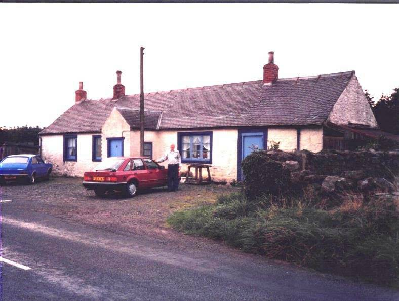

The Family Chronicle
No. 69 May 21, 2004
________________

Don Glendenning at Callister, Scotland - 1988
Callister Hall
Readers will remember an earlier chronicle with a photo of Callister Hall in Scotland where my Great Grandfather, John Glendinning was born on April 2, 1807. The latest descendant to visit Callister Hall is Joy Ayer, a GGGranddaughter of John Glendinning. Joy visited on a day that new owners, by the name of Domoney, were moving in. Joy has kept in touch and sent me a copy of a recent letter from the new residents. It reads as follows:
I felt, as it is now a year since we purchased Callisterhall and nine months sinced we moved in, that I would inform you of our progress.
We absolutely love it here and cannot believe how the community has embraced us. Many people have said, on visiting, that it has a spiritual feel about the place.
We have spent last summer working outdoors and we are still half unpacked indoors, due to the lack of space, but we are now in the process of having a barn built in the field next to the cottage so we can then "expand" into it. The fields will then be sprayed then ploughed and re-seeded.
Then I can start with my animals. We had 27 sheep from a local farmer just to graze the grass but we hope to have our own soon.
I would love to know more about Callisterhall as I am sure it has a lot to tell.
We have just bought a cage to put a puppy in (indoors) so that is something to look forward to. It will be nice to be able to shut it away safely when needed.
I still feel awful that I didn't have the time to give to you when you called in but as you can imagine, things were "fraught". Please feel free to visit us if ever you visit Scotland again.
Kind Regards
Mary Domoney
The address is "
Callister Hall
Waterbeck
Lockerbie, Scotland,
DG11 3HG
Walter and Elizabeth Glendenning
My Grandfather, Walter Glendenning, died while on a visit to Portland, Maine where many of his family were living. I was not able to find an obituary but, thanks to the Portland Library, I found the following death notice which appeared in the Portland Evening Express on Feb. 15, 1908:
GLENDENNING--In Falmouth, Feb. 14, Walter Glendenning, aged 63 years. Funeral Sunday afternoon at 2:30 o'clock, from the residence of his daughter, Mrs. Doring, Falmouth Foreside.
After my Grandfather died, Grandmother (Peters) Glendenning moved to Portland (Falmouth Foreside) to live with her daughter, Venetia. The following death notice appeared in the Portland Evening Express of May 15, 1915:
GLENDENNING--In Falmouth, May 14, Elizabeth P., widow of Walter Glendenning, aged 67 years. Funeral services Sunday afternoon at 4 o'clock, at the residence of her daughter Mrs. R. L. Doring, Falmouth Foreside. Interment Tuesday in Canoble, N.B.
Presumably they are both buried in the New Bandon Cemetery - at least there is a stone there with both names on it. My sister, Venetia, was born on the day that Grandmother Glendenning died.
"Sloven Case"
Glenn Russell tells me that some slovens, maybe all, had rollers to ease loading of threshers. He also said that sometimes a person was referred to as a "sloven case" meaning, we speculate, that he was not able
to climb into a wagon because he had too much to drink.
Transportation
My sister, Lillian, told me that Fred A. Fowlie was the first person in Black River to have a car and Harrison Smith was the first in Bayside. Malcolm MacNaughton may have been the third.
Dr. MacKenzie was the first one around to have a snowmobile; he may have had a number over the years. His machine, I believe, was built from car parts with a track on the rear and skiis on the front. Because of the weight, they got stuck easily. I recall Dr. MacKenzie's snow mobile stuck or broken down at the end of our lane (near where the concrete post is). I've seen but do not have photos of Dr. MacKenzie's snowmobile at the end of our lane.
Speaking of Dr. MacKenzie, he would make housecalls by horse to Black River, and beyond. If people needed a doctor and knew that he was down river, they would hang a lantern at the end of the lane so he would know to stop as he drove home. Imagine the amount of time used to drive to Black River by horse to see a patient.
The Chronicle is an occasional newsletter prepared by Don Glendenning and posted on the family website. It is designed to share information about my family, community and the times in which I grew up. While every effort is made to be accurate, errors are likely to occur. Comments, enquiries and information may be sent to 62 Queen Elizabeth Drive, Charlottetown, PEI, C1A 3A9. Tel: 902-892-5859 Email: dglende@auracom.com Web: www.glendenning.net